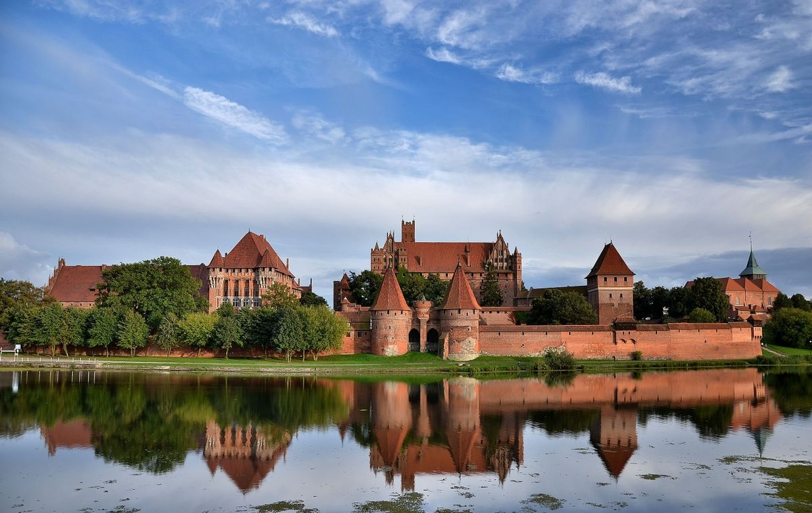
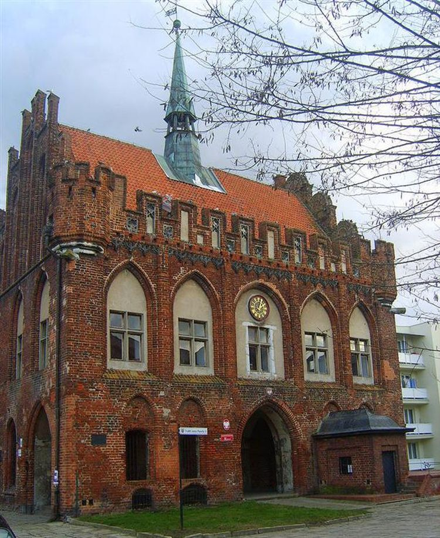
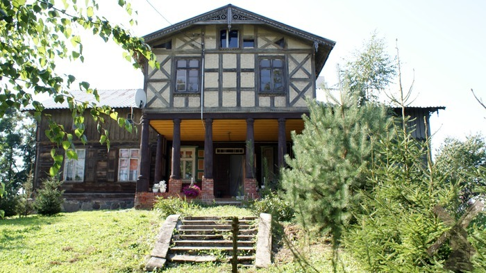

Dane o powiecie

| Siedziba | Malbork |
| Powierzchnia | 494,23 km² |
| Populacja | 64 189 |
Dane kontaktowe starostwa powiatowego
| Telefon | +48 55 646 0 400 |
| Adres | pl. Słowiański 17 82-200 Malbork |
| Strona | powiat.malbork.pl |
Atrakcje turystyczne
Zamek malborski
Największą atrakcję stanowi położony na prawym brzegu Nogatu, największy w Europie ceglany zamek gotycki, niegdyś stolica Zakonu Krzyżackiego. W roku 1997 zamek został wpisany na Listę Światowego Dziedzictwa Kultury UNESCO. Co roku odwiedzany jest przez ponad pół miliona turystów, na których czeka wiele atrakcji m.in.: spektakl "Światło i Dźwięk", pokazy rycerskie, "Oblężenie Malborka" - wielkie widowisko przenoszące turystę w czasy średniowieczne (lipiec).
Źródło: powiat.marlbork.plRatusz w Malborku
Gotycka budowla z lat 1365-80, wzniesiona na planie prostokąta, dwukondygnacyjna, podpiwniczona, z dwuspadowym dachem. Po bokach dwa ozdobne szczyty, a pośrodku kalenicy wieżyczka, w której wisiał dzwon z 1407 r. Obecnie siedziba MDK "Ratusz".
Źródło: polskaniezwykla.plDomy podcieniowe Żuław Malborskich
Najbardziej reprezentacyjny typ budynków wiejskich, występujący przede wszystkim na Żuławach. Są to budynki mieszkalne, w których do szczytu lub ściany bocznej przylega wsparta na słupach zamknięta sporych rozmiarów wystawka. Podcienie przez większość swojej historii pełniły głównie funkcję reprezentacyjną, w praktyce wykorzystywane były jako pokoje letnie, miejsca spotkań modlitewnych lub podręczny magazyn/warsztat
Źródło: wikipedia.org